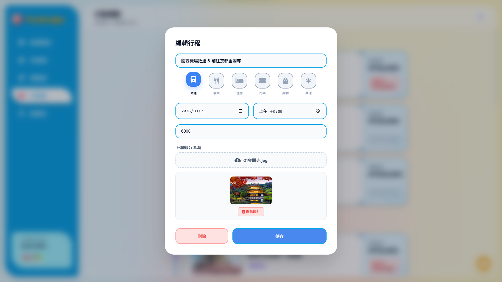
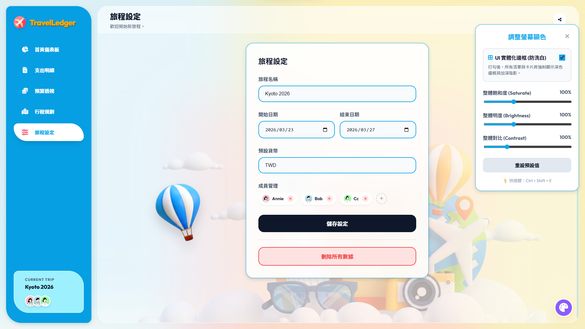
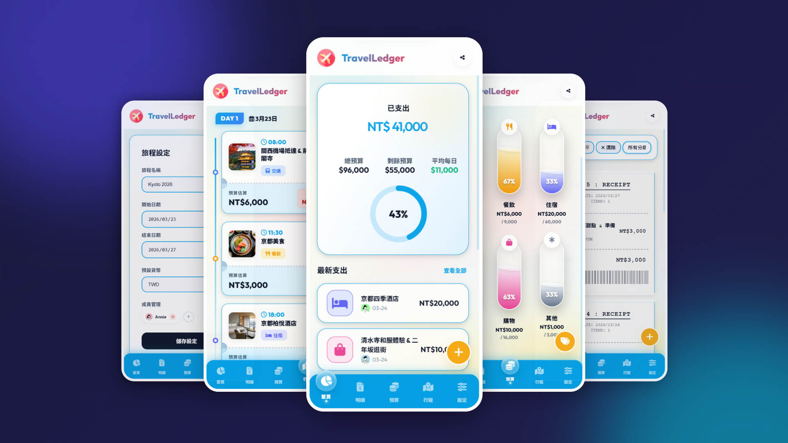
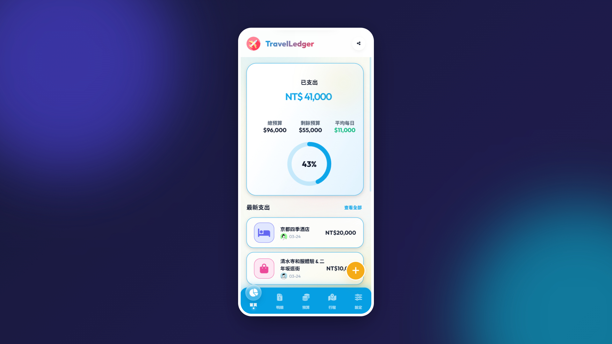
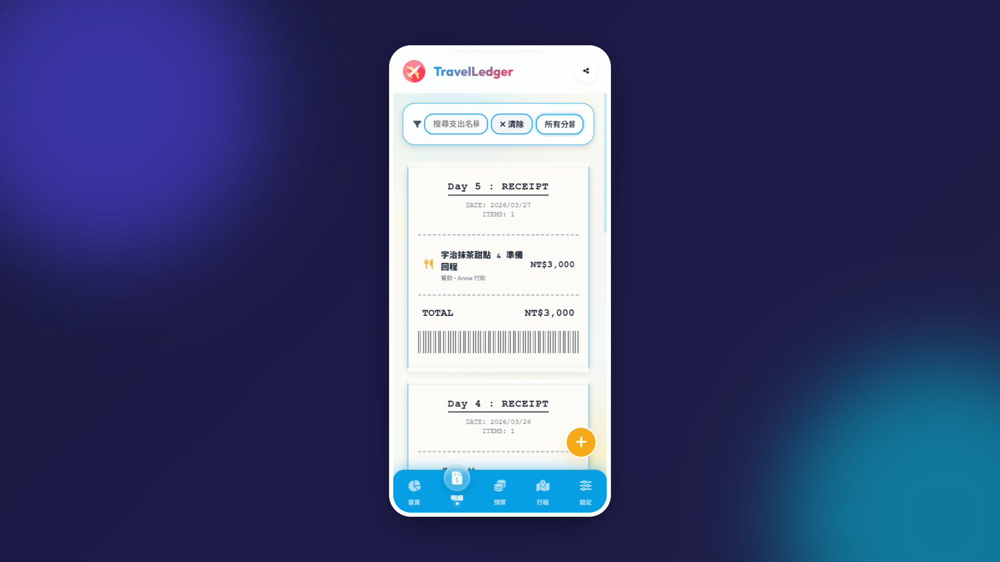
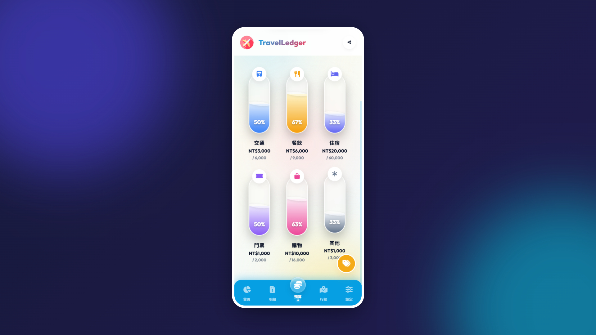
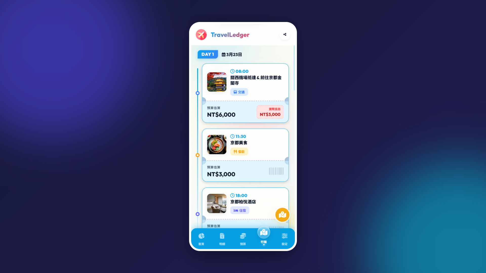
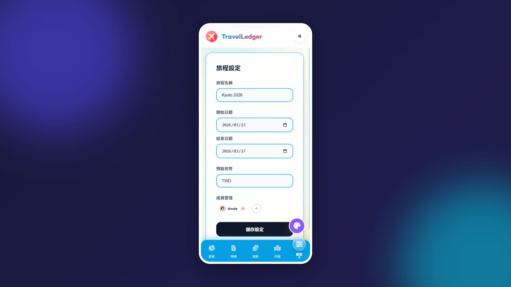
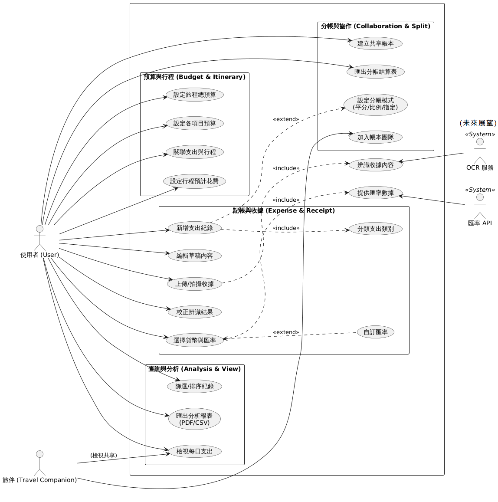
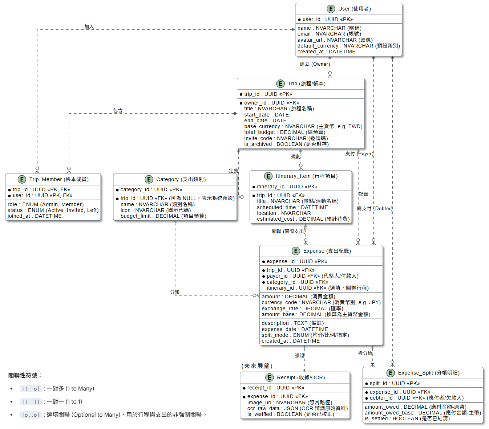

案例研究 (Case Study)
問題
旅遊時多人代墊款項與分攤邏輯（均分、比例、指定）極其複雜。傳統記帳軟體缺乏針對「多角債務」的底層架構，導致旅途結算混亂，難以精確釐清誰該還誰多少錢。
A付B、B付C、C又付A，人工計算極易出錯
現有記帳 App 僅支援簡單均分，無法處理複雜分攤情境
多國旅遊涉及不同幣別，換算與結算同時進行令人頭痛
我的角色
我從需求分析出發，主導涵蓋「行前預算、旅途記帳、行後結算」完整生命週期的系統開發。結合 UI/UX 設計與專案管理思維，統籌規劃前端響應式介面、視覺風格，以及後端資料庫的正規化設計，確保財務數據的一致性與可維護性。
需求分析
Use Case / ERD
UI/UX 設計
前後端開發
部署上線
關鍵決策
為解決核心拆帳痛點，導入貪婪演算法（Greedy Algorithm）自動推導出最精簡的「建議轉帳清單」。視覺體驗上捨棄傳統進度條，創新設計「能量水瓶（Liquid Tank UI）」顯示預算水位，超支時觸發沸騰特效強化警示。資料安全面，設計防呆機制，刪除自訂類別時自動將帳務轉移至預設分類，防止產生孤兒數據。
Excel 手動記錄
進度條顯示預算
結算後仍需自行確認
三種分帳模式一鍵選擇
Liquid Tank UI 視覺化預算
系統自動產出轉帳清單
結果與學習
系統成功整合三種分帳模式與匯率轉換，支援一鍵匯出結算報表。這次經驗讓我深刻體會到：優秀的 PM 必須具備跨領域的技術視野——從底層資料庫架構到前端互動體驗的通盤掌握，才能將複雜的業務邏輯轉化為流暢的數位體驗。
CSV / PDF
開發週期
技術視野不是要取代工程師，而是讓溝通更精準、判斷更有依據。
系統介紹 (System Introduction)
「TravelLedger」是基於 ASP.NET Core MVC (C#) 框架開發，並採用 SQL Server 作為關聯式資料庫的旅遊帳簿與預算管理系統。
後端架構與資料庫設計
系統後端採用 Entity Framework Core 進行資料庫操作，實作了包含使用者、旅程、類別、行程、支出明細以及分帳紀錄等多關聯性的資料庫模型，確保多對多關係的財務數據一致性與完整性。
前端架構與動態介面實作
前端介面運用 HTML、CSS 與 JavaScript 進行深度開發，採用現代化的「毛玻璃（Glassmorphism）」視覺風格與動態響應式設計（RWD）。系統運用非同步資料交換與動態模態視窗，無縫串接後端 API。
系統核心價值
本系統不僅提供完整的記帳 CRUD 功能，更整合了行程時間軸與實體圖片上傳至伺服器端的功能。系統內建複雜的分帳演算法與匯率轉換機制，完美涵蓋了從「行前預算編列」、「旅途中記帳與行程對照」到「行後財務結算」的完整旅遊生命週期。
UI/UX設計
TravelLedger系統設計作品

TravelLedger 首頁

TravelLedger 預算透視

TravelLedger 行程規劃

TravelLedger 編輯行程

TravelLedger 支出明細

TravelLedger 旅程設定

手機版(RWD)

手機版_首頁總覽

手機版_支出明細

手機版_預算透視

手機版_行程規劃

手機版_旅程設定
系統設計規格書 (System Design Document)
「TravelLedger 旅遊帳簿與預算管理系統」本文件涵蓋了系統架構、資料庫結構、API 規格、核心功能模組以及前端 UI/UX 規格，非常適合用於系統交接、未來擴充或作為「規格驅動開發」的基準文件。
系統概述 (System Overview)
TravelLedger 是一款專為多人團體旅遊設計的綜合型網頁應用程式。系統結合了「行程規劃」、「記帳分帳」與「預算監控」三大核心，旨在解決旅遊中繁瑣的財務拆分問題，並提供具備高度視覺回饋（如實體票券風、收據風、液體膠囊水位等）的沉浸式使用者體驗。
系統架構 (System Architecture)
本系統前端採 SPA（單頁應用）體驗設計，後端由 MVC 架構支撐資料渲染與 API 服務。
核心業務邏輯與模組 (Core Modules)
記帳與分帳模組
系統支援三種分帳模式，於前端計算後寫入資料庫的 ExpenseSplit 表中：
比例 依照輸入的百分比計算
指定 輸入每位成員絕對金額
預算水位監控模組
動態遍歷各 Category，計算該類別下所有 Expense 的總和，並與 BudgetLimit 進行比對。若超支觸發 Danger 狀態（前端表現為液體沸騰、紅色警示）。
報表與結算模組
支援匯出 CSV 與 PDF 報表格式。內建結算演算法，透過貪婪演算法 (Greedy Algorithm) 匹配債務人與債權人，快速產出最少筆數的「建議轉帳清單」。
UI/UX 與前端規格 (UI/UX Specifications)
視覺風格 (Visual Style)
以 Glassmorphism (玻璃擬物化) 為主，大量使用 backdrop-filter: blur() 與半透明背景色。環境背景透過 CSS 動畫製作漂浮色塊，營造動態呼吸感。
核心自訂元件
包含實體票券風行程 (Boarding Pass)、熱感應收據風明細 (Thermal Receipt) 以及能量水瓶預算條 (Liquid Tanks) 等沉浸式元件設計。
無障礙顯示輔助
提供 UI 增強模式，使用者可透過設定動態調整飽和度與對比，並為玻璃卡片切換實體化防洗白邊框，提升低對比度環境下的辨識率。
資料庫設計 (Database Schema / ERD)
| 實體 (Entity) | 說明 | 核心欄位與關聯 |
|---|---|---|
| User | 使用者帳號 | UserId (PK), Name, AvatarUrl |
| Trip | 旅程主檔 | TripId (PK), Title, StartDate, EndDate, TotalBudget |
| TripMember | 旅程成員關聯表 | TripId (PK/FK), UserId (PK/FK), Role, JoinedAt |
| Category | 預算類別 | CategoryId (PK), TripId (FK), Key, Name, Icon, BudgetLimit |
| ItineraryItem | 行程節點 | ItineraryId (PK), TripId (FK), Title, ScheduledTime, EstimatedCost |
| Expense | 支出主檔 | ExpenseId (PK), TripId (FK), Title, Amount, PayerId, SplitMode |
| ExpenseSplit | 分帳明細表 | SplitId (PK), ExpenseId (FK), DebtorId (FK), AmountOwed |
API 介面規格 (API Specifications)
| 路由 (Route) | 方法 | 參數 / Body | 說明 |
|---|---|---|---|
/Trip/Index | GET | 無 | 渲染首頁，載入初始 ViewModel。 |
/Trip/AddExpense | POST | Expense 參數 | 新增支出，包含關聯的 ExpenseSplit。 |
/Trip/UpdateExpense | POST | Expense 參數 | 更新支出，會先清空舊的 Splits 再重新寫入。 |
/Trip/UploadImage | POST | IFormFile file | 接收圖片，儲存至伺服器，回傳檔案 URL。 |
/Trip/InviteMember | POST | InviteMemberDto | 新增成員，若無頭像則呼叫 DiceBear API 產生。 |
使用案例圖 (Use Case)
展示 TravelLedger 系統中不同角色（使用者、旅伴、未來展望的 API 服務）與系統核心功能（預算行程、記帳收據、分帳協作、查詢分析）之間的互動關係。

實體關聯圖 (ERD)
描述系統底層資料庫的結構設計，以 Trip (旅程) 為核心，延伸出使用者、成員關聯、預算類別、行程節點、支出主檔與分帳明細之間的關聯性 (1對1、1對多等)。

AI視覺創作
AI創作_百合香水瓶

AI創作_玫瑰香水瓶
AI創作_紙藝孔雀

AI創作_動漫希臘女神
AI創作_毛茸茸的兔子
AI創作_陽光小和尚
AI創作_Q版公仔設計